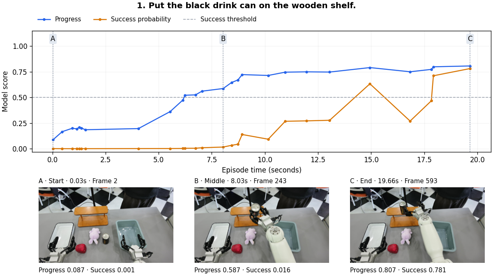

2. Put the red fruit-shaped object in the light blue tray.

Evaluated 64 selected head-camera frames across 3 instruction segments, spanning 0.03–37.96 seconds of episode time. 18 frames carry source annotation review flags. The model assigned success probability above 0.5 to 10 frames.
The 0.5 threshold is the example script’s decision threshold. Frame counts above this threshold describe model outputs. Ground-truth success rates and accuracy require human labels.
Each panel shows one instruction segment. Lettered markers on the plot match the selected head-camera images below it; the lines include every scored frame in that segment.


Start and end scores refer to the first and last selected frame carrying that instruction. These boundaries come from next-subtask annotations. They may omit the previous action’s final release or verification frame. Each score uses up to eight frames available by that point within its instruction segment.
| Instruction | Time range / frames | Progress start → end | Success at end / peak | Frames above 0.5 | Review flags |
|---|---|---|---|---|---|
| Put the black drink can on the wooden shelf. | 0.03–19.66s 26 frames | 0.087 → 0.807 | 0.781 / 0.781 | 3/26 | 1 |
| Put the red fruit-shaped object in the light blue tray. | 19.76–33.14s 27 frames | 0.113 → 0.866 | 0.926 / 0.938 | 7/27 | 6 |
| Put the lavender rabbit toy in the white tray. | 33.94–37.96s 11 frames | 0.307 → 0.534 | 0.113 / 0.113 | 0/11 | 11 |
These notes were supplied with the selected frames. They have not been independently relabeled for this evaluation.
Raw head stream /home/jiahe/system012/data/teleop_teleoperation_20261111_021924_085/episode_000000004/observation.images.cam_head.parquet. Every selected JPEG was verified against the raw frame’s timestamp and SHA-256. The inference input uses RGB images with the short side resized to 240 pixels before Qwen processing.
The gallery lists the original selected frames and their exact instructions. Changing the selected history can change a prediction. Instruction transitions reset the context, so progress values across different segments describe different tasks.
Frame and context manifest · All frame scores · All subtask summaries

| Frame / time | Head camera | Instruction and review notes | Progress / success |
|---|---|---|---|
| 2 0.03s |  | Put the black drink can on the wooden shelf. | 0.087 / 0.001 |
| 15 0.46s |  | Put the black drink can on the wooden shelf. | 0.166 / 0.001 |
| 29 0.93s |  | Put the black drink can on the wooden shelf. | 0.199 / 0.000 |
| 36 1.16s |  | Put the black drink can on the wooden shelf. | 0.194 / 0.000 |
| 39 1.26s |  | Put the black drink can on the wooden shelf. | 0.210 / 0.001 |
| 42 1.36s |  | Put the black drink can on the wooden shelf. | 0.202 / 0.001 |
| 48 1.56s |  | Put the black drink can on the wooden shelf. | 0.185 / 0.001 |
| 123 4.05s |  | Put the black drink can on the wooden shelf. | 0.196 / 0.001 |
| 168 5.54s |  | Put the black drink can on the wooden shelf. | 0.362 / 0.002 |
| 186 6.14s |  | Put the black drink can on the wooden shelf. | 0.475 / 0.003 |
| 189 6.24s |  | Put the black drink can on the wooden shelf. | 0.521 / 0.005 |
| 204 6.74s |  | Put the black drink can on the wooden shelf. | 0.525 / 0.005 |
| 213 7.04s |  | Put the black drink can on the wooden shelf. | 0.561 / 0.010 |
| 243 8.03s |  | Put the black drink can on the wooden shelf. | 0.587 / 0.016 |
| 255 8.43s |  | Put the black drink can on the wooden shelf. | 0.645 / 0.033 |
| 264 8.73s |  | Put the black drink can on the wooden shelf. | 0.670 / 0.044 |
| 270 8.93s |  | Put the black drink can on the wooden shelf. | 0.722 / 0.139 |
| 307 10.16s |  | Put the black drink can on the wooden shelf. | 0.714 / 0.093 |
| 331 10.96s |  | Put the black drink can on the wooden shelf. | 0.746 / 0.268 |
| 361 11.95s |  | Put the black drink can on the wooden shelf. | 0.749 / 0.271 |
| 394 13.05s |  | Put the black drink can on the wooden shelf. | 0.747 / 0.277 |
| 451 14.94s |  | Put the black drink can on the wooden shelf. | 0.791 / 0.633 |
| 508 16.83s |  | Put the black drink can on the wooden shelf. | 0.750 / 0.270 |
| 538 17.83s |  | Put the black drink can on the wooden shelf. | 0.773 / 0.467 |
| 541 17.93s |  | Put the black drink can on the wooden shelf. | 0.798 / 0.711 |
| 593 19.66s |  | Put the black drink can on the wooden shelf. Task boundary: confirm release and next target in the original head/wrist images. | 0.807 / 0.781 |
| 596 19.76s |  | Put the red fruit-shaped object in the light blue tray. Task boundary: confirm release and next target in the original head/wrist images. | 0.113 / 0.001 |
| 605 20.06s |  | Put the red fruit-shaped object in the light blue tray. | 0.174 / 0.000 |
| 614 20.35s |  | Put the red fruit-shaped object in the light blue tray. | 0.215 / 0.000 |
| 626 20.75s |  | Put the red fruit-shaped object in the light blue tray. | 0.233 / 0.001 |
| 635 21.05s |  | Put the red fruit-shaped object in the light blue tray. | 0.281 / 0.001 |
| 662 21.95s |  | Put the red fruit-shaped object in the light blue tray. | 0.373 / 0.002 |
| 680 22.55s |  | Put the red fruit-shaped object in the light blue tray. | 0.205 / 0.001 |
| 704 23.34s |  | Put the red fruit-shaped object in the light blue tray. | 0.136 / 0.002 |
| 707 23.44s |  | Put the red fruit-shaped object in the light blue tray. | 0.139 / 0.002 |
| 719 23.84s |  | Put the red fruit-shaped object in the light blue tray. | 0.162 / 0.002 |
| 722 23.94s |  | Put the red fruit-shaped object in the light blue tray. | 0.190 / 0.002 |
| 731 24.24s |  | Put the red fruit-shaped object in the light blue tray. | 0.228 / 0.002 |
| 755 25.04s |  | Put the red fruit-shaped object in the light blue tray. | 0.366 / 0.003 |
| 782 25.94s |  | Put the red fruit-shaped object in the light blue tray. | 0.415 / 0.005 |
| 815 27.03s |  | Put the red fruit-shaped object in the light blue tray. | 0.363 / 0.002 |
| 839 27.83s |  | Put the red fruit-shaped object in the light blue tray. | 0.438 / 0.003 |
| 849 28.16s |  | Put the red fruit-shaped object in the light blue tray. | 0.456 / 0.002 |
| 855 28.36s |  | Put the red fruit-shaped object in the light blue tray. | 0.454 / 0.003 |
| 876 29.06s |  | Put the red fruit-shaped object in the light blue tray. | 0.677 / 0.095 |
| 891 29.56s |  | Put the red fruit-shaped object in the light blue tray. | 0.685 / 0.084 |
| 921 30.55s |  | Put the red fruit-shaped object in the light blue tray. | 0.785 / 0.531 |
| 924 30.65s |  | Put the red fruit-shaped object in the light blue tray. | 0.817 / 0.648 |
| 930 30.85s |  | Put the red fruit-shaped object in the light blue tray. The red fruit is in the white tray, contrary to the configured fruit-to-blue rule. Corrective transfer remains unfinished. | 0.836 / 0.816 |
| 939 31.15s |  | Put the red fruit-shaped object in the light blue tray. The red fruit is in the white tray, contrary to the configured fruit-to-blue rule. Corrective transfer remains unfinished. | 0.878 / 0.918 |
| 945 31.35s |  | Put the red fruit-shaped object in the light blue tray. The red fruit is in the white tray, contrary to the configured fruit-to-blue rule. Corrective transfer remains unfinished. | 0.882 / 0.938 |
| 960 31.85s |  | Put the red fruit-shaped object in the light blue tray. The red fruit is in the white tray, contrary to the configured fruit-to-blue rule. Corrective transfer remains unfinished. | 0.870 / 0.922 |
| 999 33.14s |  | Put the red fruit-shaped object in the light blue tray. Task boundary: confirm release and next target in the original head/wrist images.; The red fruit is in the white tray, contrary to the configured fruit-to-blue rule. Corrective transfer remains unfinished. | 0.866 / 0.926 |
| 1023 33.94s |  | Put the lavender rabbit toy in the white tray. Task boundary: confirm release and next target in the original head/wrist images.; The red fruit is in the white tray, contrary to the configured fruit-to-blue rule. Corrective transfer remains unfinished. | 0.307 / 0.004 |
| 1026 34.04s |  | Put the lavender rabbit toy in the white tray. The red fruit is in the white tray, contrary to the configured fruit-to-blue rule. Corrective transfer remains unfinished. | 0.426 / 0.001 |
| 1035 34.34s |  | Put the lavender rabbit toy in the white tray. The red fruit is in the white tray, contrary to the configured fruit-to-blue rule. Corrective transfer remains unfinished. | 0.468 / 0.001 |
| 1053 34.94s |  | Put the lavender rabbit toy in the white tray. The red fruit is in the white tray, contrary to the configured fruit-to-blue rule. Corrective transfer remains unfinished. | 0.508 / 0.002 |
| 1089 36.13s |  | Put the lavender rabbit toy in the white tray. The red fruit is in the white tray, contrary to the configured fruit-to-blue rule. Corrective transfer remains unfinished. | 0.499 / 0.003 |
| 1101 36.53s |  | Put the lavender rabbit toy in the white tray. The red fruit is in the white tray, contrary to the configured fruit-to-blue rule. Corrective transfer remains unfinished. | 0.477 / 0.004 |
| 1119 37.13s |  | Put the lavender rabbit toy in the white tray. The red fruit is in the white tray, contrary to the configured fruit-to-blue rule. Corrective transfer remains unfinished. | 0.473 / 0.008 |
| 1122 37.23s |  | Put the lavender rabbit toy in the white tray. The red fruit is in the white tray, contrary to the configured fruit-to-blue rule. Corrective transfer remains unfinished.; The rabbit is in the light blue tray, contrary to the configured toys-to-white rule. Move it to the white tray. | 0.418 / 0.077 |
| 1135 37.66s |  | Put the lavender rabbit toy in the white tray. The red fruit is in the white tray, contrary to the configured fruit-to-blue rule. Corrective transfer remains unfinished.; The rabbit is in the light blue tray, contrary to the configured toys-to-white rule. Move it to the white tray. | 0.438 / 0.063 |
| 1138 37.76s |  | Put the lavender rabbit toy in the white tray. The red fruit is in the white tray, contrary to the configured fruit-to-blue rule. Corrective transfer remains unfinished.; The rabbit is in the light blue tray, contrary to the configured toys-to-white rule. Move it to the white tray. | 0.408 / 0.067 |
| 1144 37.96s |  | Put the lavender rabbit toy in the white tray. The red fruit is in the white tray, contrary to the configured fruit-to-blue rule. Corrective transfer remains unfinished.; The rabbit is in the light blue tray, contrary to the configured toys-to-white rule. Move it to the white tray. | 0.534 / 0.113 |